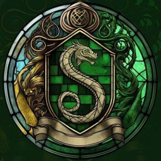
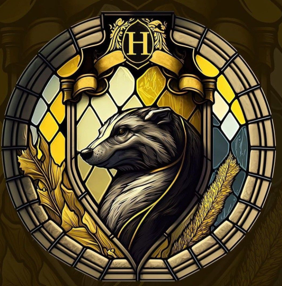
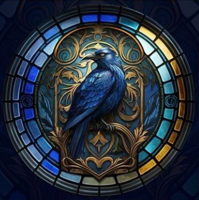
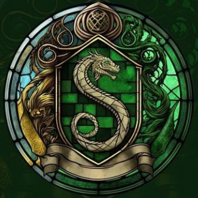
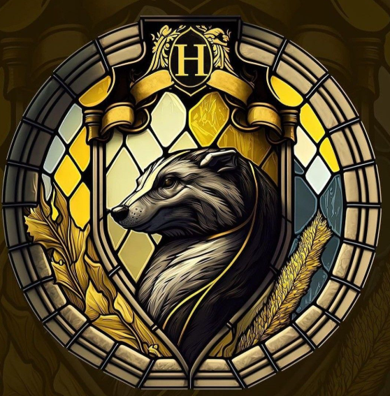
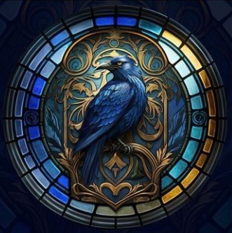

Mysteries of the Hogwarts Houses
There are 4 houses that you can get into when you enter Hogwarts. These houses were named after each of the 4 founders of Hogwarts: Godric Gryffindor, Rowena Ravenclaw, Salazar Slytherin, and Helga Hufflepuff. The sorting hat groups you based on your most prominent attributes, however, it also takes into account your preferences. For example, Harry Potter had attributes that could have made him part of the Slytherin group, however, he whispered to himself that he did not want to be there, so the sorting hat grouped him into the Gryffindor group.
Gryffindor
Named after one of the founders of Hogwarts, Godric Gryffindor. The Head of the House is Professor Minerva McGonagall. Some of the characteristics that the members of this house possess are courage, bravery, and determination. Their main colors are red and yellow and their symbol is a lion.
Slytherin
Named after one of the founders of Hogwarts, Salazar Slytherin. The Head of the House is Professor Severus Snape. Some of the characteristics that the members of this house possess are ambition, leadership, and resourcefulness. Their main colors are green and silver and their symbol is a snake.
Hufflepuff
Named after one of the founders of Hogwarts, Helga Hufflepuff. The Head of the House is Professor Pomona Sprout. Some of the characteristics that the members of this house possess are loyalty, humility, and dedication. Their main colors are yellow and black and their symbol is a badger.
Ravenclaw
Named after one of the founders of Hogwarts, Rowena Ravenclaw. The Head of the House is Professor Filius Flitwick. Some of the characteristics that the members of this house possess are intelligence, wit, and creativity. Their main colors are blue and bronze and their symbol is an eagle.
 




